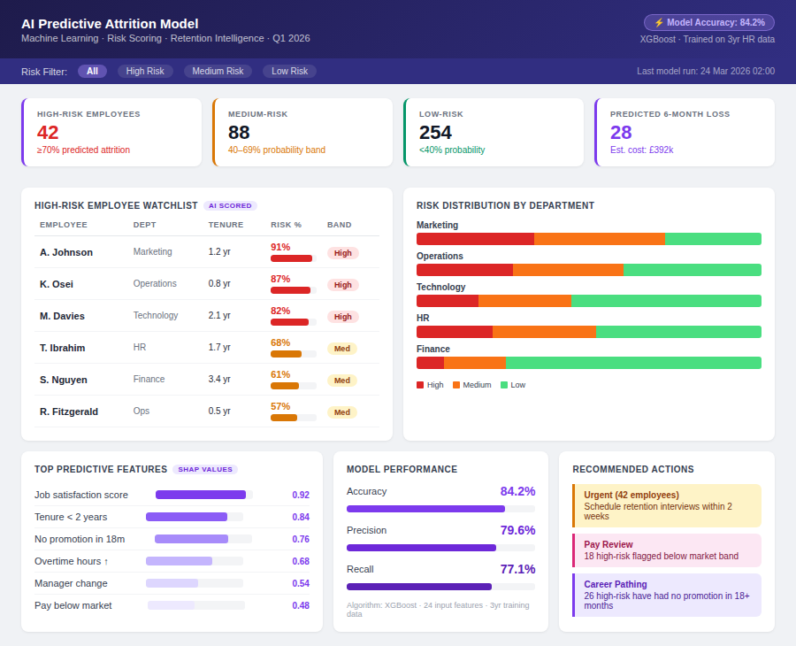

HR Attrition Analysis Dashboard
Identified £312K in hidden turnover costs and highlighted early-tenure attrition risks.
Tools: SQL, Excel, Power BI
Impact: Enabled targeted retention strategies and workforce planning decisions.

Recruitment Pipeline Analytics
Analysed recruitment funnel performance and identified bottlenecks affecting hiring timelines.
Tools: Power BI, Excel
Impact: Improved recruitment efficiency and reduced time-to-fill delays.

Employee Performance Analytics Dashboard
Tracked performance metrics and workforce productivity trends.
Tools: Power BI, Excel
Impact: Improved visibility into employee performance and productivity trends.

AI Predictive Attrition Risk Model
Developed a predictive analytics model to identify employees at risk of leaving using workforce data patterns.
Tools: Python, SQL, Power BI
Impact: Enabled proactive retention planning and reduced attrition risk exposure.